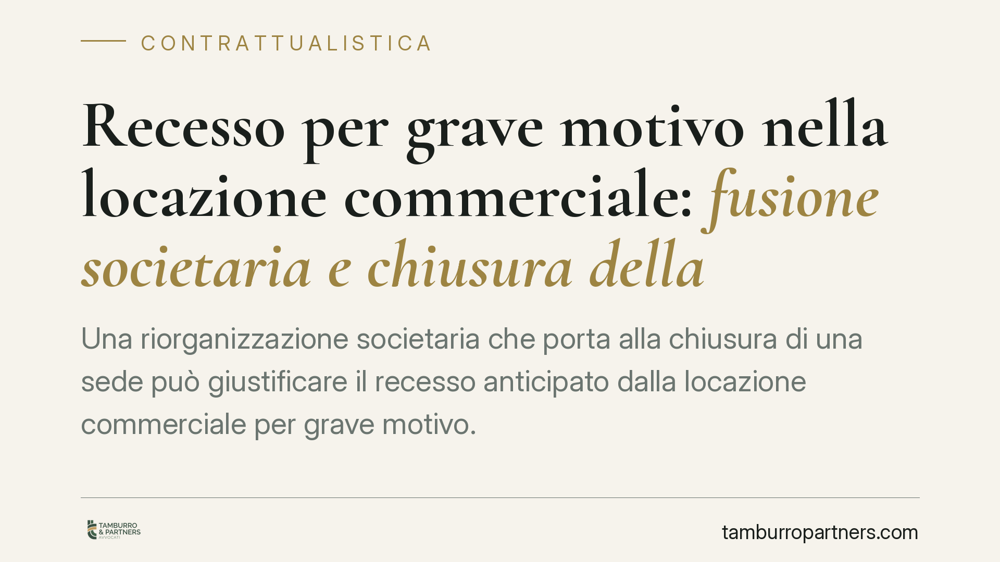

Recesso per grave motivo nella locazione commerciale: fusione societaria e chiusura della sede
Una riorganizzazione societaria che porta alla chiusura di una sede può giustificare il recesso anticipato dalla locazione commerciale per grave motivo. Il tema tocca la contrattualistica d'impresa e l'interpretazione dell'art. 27 della L. 392/1978. Analizziamo l'orientamento, il ruolo del preavviso e il delicato profilo dell'indennità di occupazione quando il locatore rifiuta la riconsegna.

Il caso e la questione
Una società conduttrice di un immobile commerciale, a seguito di una fusione per incorporazione, chiude la sede locata e comunica il recesso anticipato. Il locatore contesta la legittimità dell'uscita dal contratto e pretende i canoni fino alla scadenza naturale, oltre all'indennità per l'occupazione protratta.
La questione ruota su due profili distinti: se una vicenda di riorganizzazione societaria possa integrare il "grave motivo" che legittima il recesso anticipato, e se il conduttore che offre la restituzione dell'immobile resti comunque debitore quando il proprietario si rifiuta di riprenderlo.
L'inquadramento normativo
L'art. 27, comma 8, della L. 392/1978 consente al conduttore di recedere in qualsiasi momento dal contratto di locazione commerciale, con preavviso di almeno sei mesi, "qualora ricorrano gravi motivi".
La norma non contiene un elenco tassativo. Spetta al giudice valutare, caso per caso, se la circostanza dedotta abbia i caratteri richiesti dalla giurisprudenza: deve trattarsi di un fatto sopravvenuto, estraneo alla volontà del conduttore e tale da rendere gravosa la prosecuzione del rapporto sul piano economico o organizzativo.
Un dato interpretativo rilevante riguarda la prospettiva di valutazione: rileva la causa dell'evento, non il suo semplice effetto. Una ristrutturazione societaria che risponda a reali esigenze organizzative e imponga la chiusura di una sede può, in questa lettura, assumere valore di grave motivo. Diverso è il caso in cui la chiusura sia una scelta puramente discrezionale e strumentale.
Si tratta, in ogni caso, di una valutazione rimessa all'apprezzamento del giudice di merito. Non esiste alcun automatismo: la fusione, di per sé, non integra sempre e comunque il grave motivo.
Il profilo dell'indennità di occupazione
Il secondo tema riguarda le somme dovute per il periodo successivo alla comunicazione di recesso, quando l'immobile non viene materialmente riconsegnato.
Di regola, il conduttore che continua a detenere l'immobile dopo la cessazione del rapporto deve al locatore un'indennità di occupazione (art. 1591 c.c.). La riconsegna, tuttavia, richiede la cooperazione del creditore: se il locatore rifiuta ingiustificatamente di riprendere l'immobile, si apre il tema della mora del creditore (mora accipiendi), disciplinata dagli artt. 1206-1207 c.c.
È opportuna qui una precisazione tecnica. L'art. 1220 c.c. riguarda un profilo diverso: l'offerta non formale della prestazione impedisce che il debitore sia costituito in mora, purché il creditore non abbia motivo legittimo per rifiutarla. La mora del creditore, con i suoi effetti liberatori, è invece regolata dagli artt. 1206-1207 c.c. e presuppone un'offerta idonea e un rifiuto ingiustificato.
In concreto: se il conduttore mette effettivamente a disposizione l'immobile e il locatore rifiuta senza ragione, il rifiuto può incidere sulla pretesa di indennità per il periodo successivo. Resta un accertamento di fatto, che dipende dalla prova dell'offerta e della sua idoneità.
Implicazioni pratiche
Per il conduttore-impresa, la decisione di uscire da un contratto commerciale in corso di riorganizzazione va documentata con cura: le ragioni organizzative della chiusura devono essere ricostruibili e coerenti. Il recesso resta soggetto al preavviso semestrale.
Per il locatore, il rifiuto della riconsegna non è privo di conseguenze: un diniego non giustificato può indebolire la pretesa di canoni e indennità per il periodo successivo. La riconsegna va gestita con verbali e comunicazioni tracciabili.
Cosa fare in concreto
- Formalizzate il recesso per iscritto, indicando in modo puntuale il grave motivo e rispettando il preavviso di almeno sei mesi previsto dall'art. 27, comma 8.
- Documentate la causa organizzativa dell'evento (delibere, atti di fusione, piani di riorganizzazione): l'apprezzamento del giudice si fonda su fatti verificabili.
- Offrite la riconsegna in forma tracciabile, fissando data e modalità e conservando prova del tentativo di consegna e dell'eventuale rifiuto.
- Come locatore, non rifiutate la riconsegna senza motivo: se contestate la legittimità del recesso, fatelo per iscritto e valutate la ripresa dell'immobile con riserva.
- Verificate le clausole contrattuali su recesso, penali e modalità di riconsegna prima di ogni iniziativa.
Disclaimer
Contributo informativo a cura di Tamburro & Partners Avvocati - Avv. Giuseppe Tamburro. Non costituisce parere legale.
Ogni contratto ha il suo equilibrio.
Se vuoi una revisione delle clausole o una redazione su misura, scrivi allo studio. Ti rispondiamo entro un giorno lavorativo.